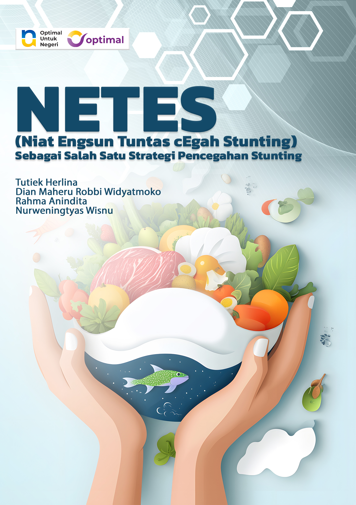

ISBN : 978-634-7426-00-0
Buku NETES (Niat Engsun Tuntas cEgah Stunting) lahir dari keprihatinan
penulis terhadap masih tingginya angka stunting di Indonesia,
khususnya di daerah pedesaan. Stunting, atau kondisi gagal tumbuh
akibat kekurangan gizi kronis, berdampak serius pada perkembangan
fisik, kecerdasan, dan kualitas hidup anak di masa depan.
Melalui kajian ilmiah, pengalaman lapangan, serta praktik baik di
masyarakat, buku ini menghadirkan strategi pencegahan stunting
berbasis kearifan lokal. Salah satunya adalah program NETES yang
menekankan pada gerakan sosial pemberian telur satu butir sehari
selama 90 hari kepada balita berisiko stunting.
Dengan bahasa sederhana namun berbasis data, buku ini diharapkan
menjadi inspirasi sekaligus panduan praktis bagi tenaga kesehatan,
pendidik, pemerintah daerah, maupun masyarakat umum dalam upaya
bersama menurunkan angka stunting.